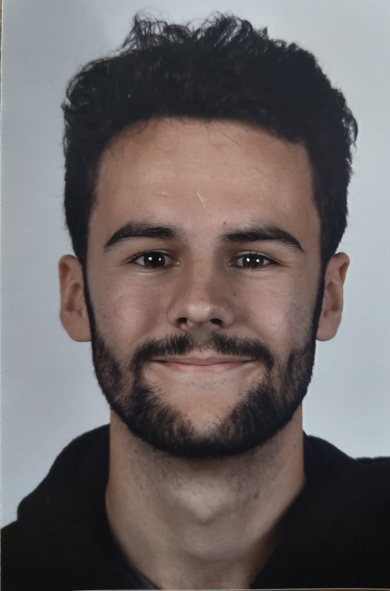

SOFTWARE ENGINEERING · CREATIVE TECHNOLOGY
Software Engineer & Creative Technologist based in Amsterdam.
Hi, I’m Esa Verboom, a Software Engineering student at the HvA who combines code, interaction and visual thinking to make technology feel more intuitive.
Available Spring 2027
Seeking a 5-month graduation internship in Stockholm across frontend, Backend, UI/UX, full stack or interactive media. Always open to learn new things.
Seeking a 5-month graduation internship in Stockholm across frontend, Backend, UI/UX, full stack or interactive media. Always open to learn new things.
During my studies, I’ve worked on projects involving Unity, AR Foundation, web development, databases, backend and UX/UI design. I enjoy exploring new technologies, problem-solving, and turning ideas into real-world applications.
My work spans Unity and C#, TypeScript and other programming languages, AR navigation, web development, prototyping, ethical research and critical design.
